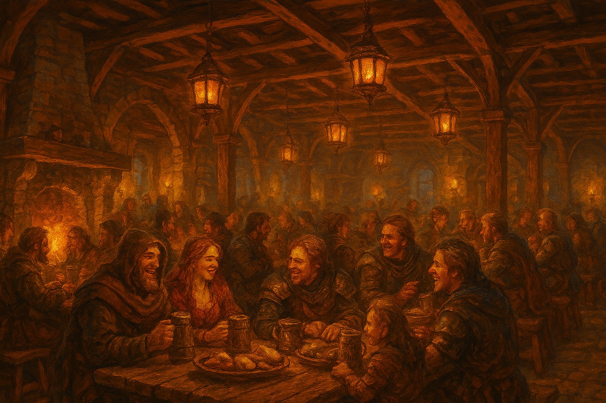
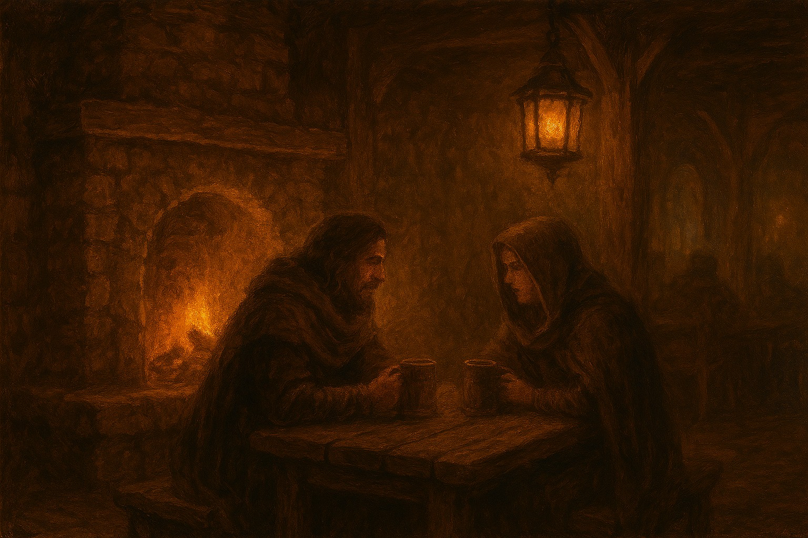
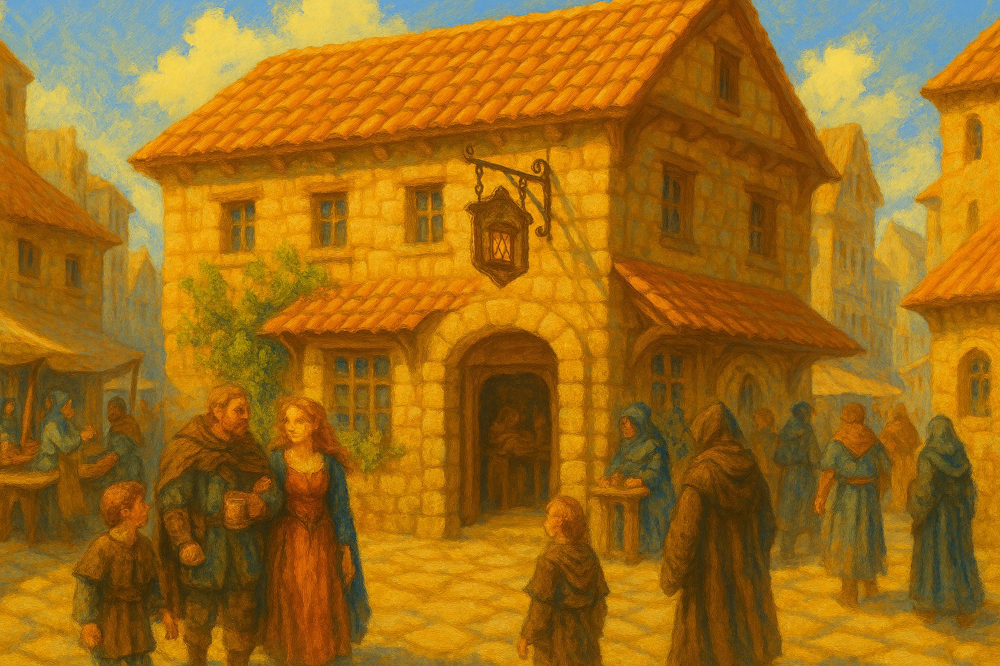
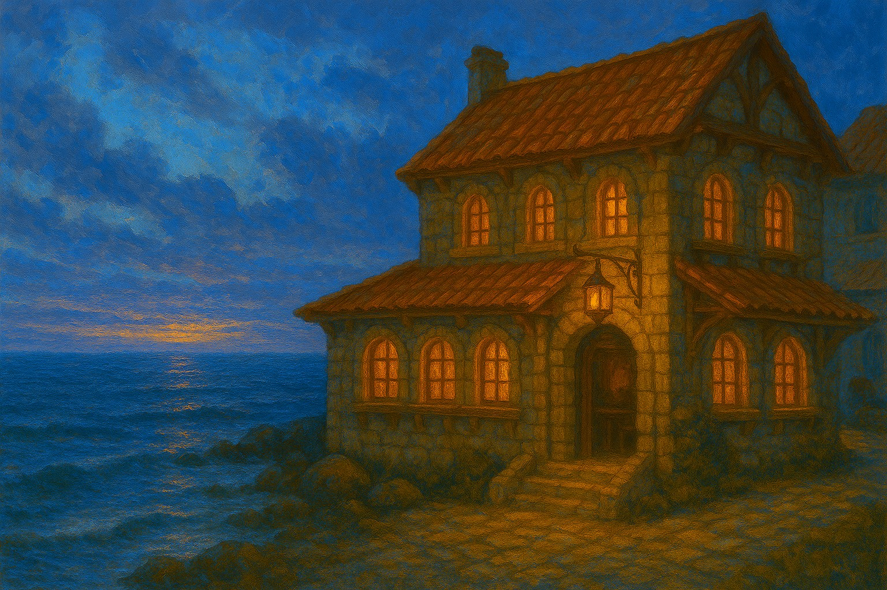
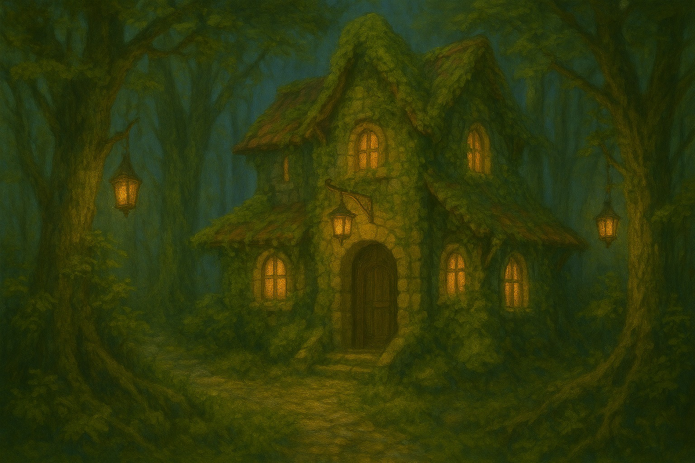
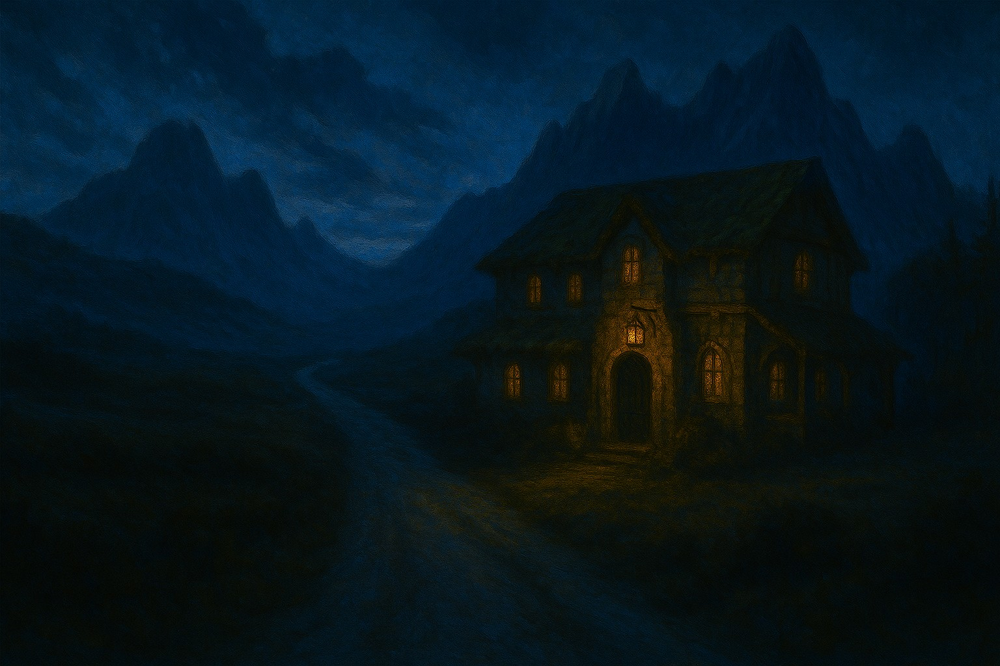
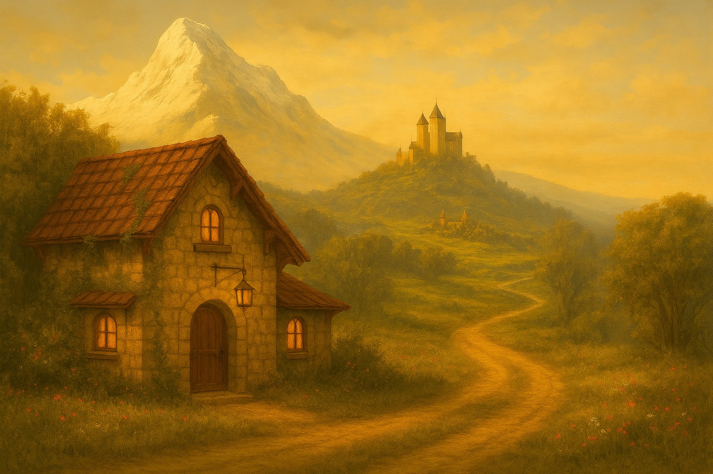
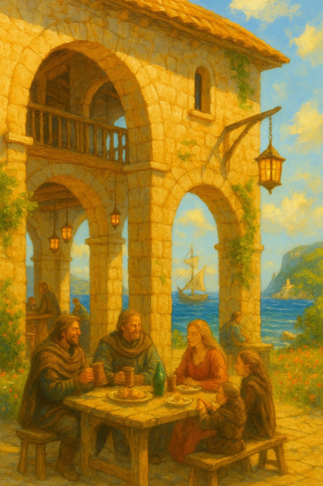

Gallery
A glimpse into tavern life across the realm — from roaring hearths to shared tables and well‑earned rest.








A glimpse into tavern life across the realm — from roaring hearths to shared tables and well‑earned rest.







